Last updated: 2021-05-12
Checks: 7 0
Knit directory:
thesis/analysis/
This reproducible R Markdown analysis was created with workflowr (version 1.6.2). The Checks tab describes the reproducibility checks that were applied when the results were created. The Past versions tab lists the development history.
Great! Since the R Markdown file has been committed to the Git repository, you know the exact version of the code that produced these results.
Great job! The global environment was empty. Objects defined in the global environment can affect the analysis in your R Markdown file in unknown ways. For reproduciblity it’s best to always run the code in an empty environment.
The command set.seed(20210321) was run prior to running the code in the R Markdown file.
Setting a seed ensures that any results that rely on randomness,
e.g. subsampling or permutations, are reproducible.
Great job! Recording the operating system, R version, and package versions is critical for reproducibility.
Nice! There were no cached chunks for this analysis, so you can be confident that you successfully produced the results during this run.
Great job! Using relative paths to the files within your workflowr project makes it easier to run your code on other machines.
Great! You are using Git for version control. Tracking code development and connecting the code version to the results is critical for reproducibility.
The results in this page were generated with repository version 7fd4ff2. See the Past versions tab to see a history of the changes made to the R Markdown and HTML files.
Note that you need to be careful to ensure that all relevant files for the
analysis have been committed to Git prior to generating the results (you can
use wflow_publish or wflow_git_commit). workflowr only
checks the R Markdown file, but you know if there are other scripts or data
files that it depends on. Below is the status of the Git repository when the
results were generated:
Ignored files:
Ignored: .Rproj.user/
Ignored: data/DB/
Ignored: data/raster/
Ignored: data/raw/
Ignored: data/vector/
Ignored: docker_command.txt
Ignored: output/acc/
Ignored: output/bayes/
Ignored: output/ffs/
Ignored: output/models/
Ignored: output/plots/
Ignored: output/test-results/
Ignored: renv/library/
Ignored: renv/staging/
Ignored: report/presentation/
Untracked files:
Untracked: analysis/assets/
Note that any generated files, e.g. HTML, png, CSS, etc., are not included in this status report because it is ok for generated content to have uncommitted changes.
These are the previous versions of the repository in which changes were made
to the R Markdown (analysis/eda-response.Rmd) and HTML (docs/eda-response.html)
files. If you’ve configured a remote Git repository (see
?wflow_git_remote), click on the hyperlinks in the table below to
view the files as they were in that past version.
| File | Version | Author | Date | Message |
|---|---|---|---|---|
| Rmd | 7fd4ff2 | Darius Görgen | 2021-05-12 | workflowr::wflow_publish(files = list.files(“.”, “Rmd$”)) |
| Rmd | de8ce5a | Darius Görgen | 2021-04-05 | add content |
Two different units of analysis are tested against their capability to capture environmental processes contributing to the occurrences of violent conflict. The first unit of analysis represents NUTS-3 Level of administrative units over the African continent.
adm = st_read("../data/vector/states_mask.gpkg", quiet = T)
adm = adm[,c("adm1_code", "adm1_code", "name", "name_de", "name_en", "type_en",
"latitude", "longitude", "sov_a3", "adm0_a3", "geonunit")]
admSimple feature collection with 847 features and 11 fields
geometry type: MULTIPOLYGON
dimension: XY
bbox: xmin: -17.52892 ymin: -34.82195 xmax: 51.41681 ymax: 37.3452
CRS: 4326
First 10 features:
adm1_code adm1_code.1 name
1 ETH-3129 ETH-3129 Southern Nations, Nationalities and Peoples
2 SDS-892 SDS-892 Eastern Equatoria
3 ETH-3134 ETH-3134 Somali
4 SOM-2413 SOM-2413 Nugaal
5 SOM-2412 SOM-2412 Mudug
6 SOM-2408 SOM-2408 Galguduud
7 SOM-2409 SOM-2409 Hiiraan
8 SOM-2312 SOM-2312 Bakool
9 SOM-2314 SOM-2314 Gedo
10 KEN-890 KEN-890 Rift Valley
name_de name_en type_en
1 Region der südlichen Nationen Southern Nations Administrative State
2 Eastern Equatoria Eastern Equatoria State
3 Somali Somali Region Administrative State
4 Nugaal Nugal Region
5 Mudug Mudug Region
6 Galguduud Galguduud Region
7 Hiiraan Hiran Region
8 Bakool Bakool Region
9 Gedo Gedo Region
10 Rift Valley Rift Valley Province Province
latitude longitude sov_a3 adm0_a3 geonunit geom
1 6.21467 36.4494 ETH ETH Ethiopia MULTIPOLYGON (((35.32077 5....
2 4.79636 33.5351 SDS SDS South Sudan MULTIPOLYGON (((34.96796 6....
3 7.09365 43.5345 ETH ETH Ethiopia MULTIPOLYGON (((47.97917 7....
4 8.46102 48.8490 SOM SOM Puntland MULTIPOLYGON (((47.53239 7....
5 5.51036 48.1009 SOM SOM Somalia MULTIPOLYGON (((46.46696 6....
6 5.09616 46.6795 SOM SOM Somalia MULTIPOLYGON (((45.51848 5....
7 4.36813 45.4984 SOM SOM Somalia MULTIPOLYGON (((44.59681 4....
8 4.40611 43.8350 SOM SOM Somalia MULTIPOLYGON (((42.87019 4....
9 3.05384 42.0524 SOM SOM Somalia MULTIPOLYGON (((41.88502 3....
10 1.15655 36.0169 KEN KEN Kenya MULTIPOLYGON (((33.97708 4....As we can see from above output, we end up with 847 features in total covering the African continent. Let’s plot a map which’s color is based on the country a certain polygon belongs to. The results should look quite familiar:
adm %<>%
st_make_valid() %>%
st_cast("MULTIPOLYGON") %>%
mutate(area = st_area(geom))
adm %>%
group_by(sov_a3) %>%
summarise(geom = st_union(geom), area = sum(area)) %>%
st_centroid() -> adm_point
tmap_options(max.categories = 50)
tm_shape(adm) +
tm_polygons("sov_a3", border.col = "white", lwd = .5) +
tm_shape(adm_point) +
tm_text("sov_a3", size = "area") +
tm_legend(show = FALSE)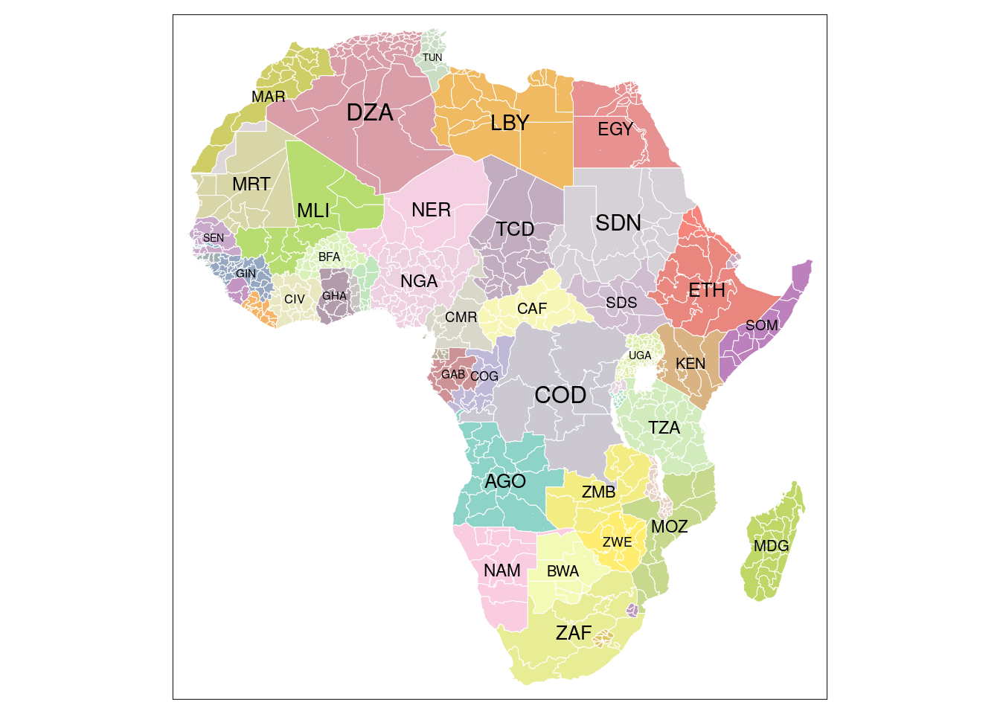
In comparison to administrative units we test the capability of sub-basin watersheds to capture the pattern of violent conflicts. The selection of the appropriate level was mainly driven to obtain a comparable number of units in order to not include a bias by diverging sizes. Thus the fifth level of the Hydrosheds datasets was chosen.
bas = st_read("../data/vector/basins_mask.gpkg", quiet = TRUE)
basSimple feature collection with 1013 features and 13 fields
geometry type: MULTIPOLYGON
dimension: XY
bbox: xmin: -17.52892 ymin: -34.82195 xmax: 51.41681 ymax: 37.3452
CRS: 4326
First 10 features:
HYBAS_ID NEXT_DOWN NEXT_SINK MAIN_BAS DIST_SINK DIST_MAIN SUB_AREA
1 1050000010 0 1050000010 1050000010 0 0 45567.0
2 1050001370 0 1050001370 1050001370 0 0 11678.4
3 1050001380 0 1050001380 1050001380 0 0 5524.6
4 1050001510 0 1050001510 1050001510 0 0 42400.5
5 1050001520 0 1050001520 1050001520 0 0 16198.5
6 1050002290 0 1050002290 1050002290 0 0 4584.0
7 1050002300 0 1050002300 1050002300 0 0 11221.8
8 1050002760 0 1050002760 1050002760 0 0 63986.6
9 1050002770 0 1050002770 1050002770 0 0 35181.7
10 1050003990 0 1050003990 1050003990 0 0 62992.8
UP_AREA PFAF_ID ENDO COAST ORDER SORT geom
1 45567.0 11101 0 1 0 1 MULTIPOLYGON (((32.275 30.1...
2 11678.5 11102 0 0 1 2 MULTIPOLYGON (((35.14167 22...
3 5524.6 11103 0 1 0 3 MULTIPOLYGON (((35.92083 22...
4 42400.5 11104 0 0 1 4 MULTIPOLYGON (((35.24167 21...
5 16198.5 11105 0 1 0 5 MULTIPOLYGON (((37.16129 21...
6 4584.0 11106 0 0 1 6 MULTIPOLYGON (((36.6 18.787...
7 11221.8 11107 0 1 0 7 MULTIPOLYGON (((37.00417 18...
8 63986.6 11108 0 0 1 8 MULTIPOLYGON (((38.4625 16....
9 35181.7 11109 0 1 0 9 MULTIPOLYGON (((38.64583 15...
10 62992.8 11211 0 1 0 10 MULTIPOLYGON (((42.94285 10...The total number of units is 1013 which is roughly comparable to the number of administrative units. On a map we get a less familiar pattern of the African continent, however, we can distinguish between the main watersheds.
bas_group = st_read("../data/raw/hydrosheds/hybas_af_lev03_v1c.shp", quiet = TRUE)
bas_group %<>%
mutate(HYBAS_ID = as.factor(HYBAS_ID))
bas %<>%
mutate(area = st_area(geom))
tm_shape(bas_group) +
tm_polygons("HYBAS_ID", lwd = 0) +
tm_shape(bas) +
tm_borders("white", lwd = .3) +
tm_legend(show = FALSE)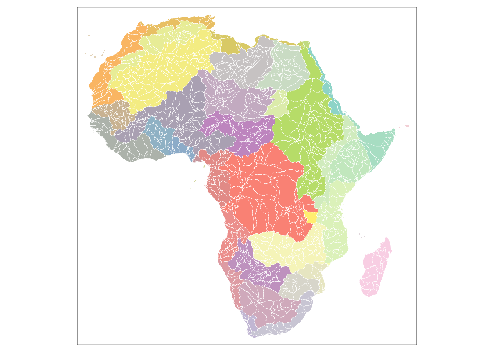
The next plot shows a comparison of the distribution of area size between the two different units of analysis. The average area size of the sub-basin watersheds is slightly higher compared to the administrative units. However, for both types of units the majority of individuals lie in a comparable range. For administrative units there are both more small as well as very large units. Overall, the size of the units remains comparable between the two.
data = data.frame(group = c(rep("ADM", nrow(adm)), rep("BAS", nrow(bas))),
area = c(as.numeric(adm$area / 1000000), as.numeric(bas$area / 1000000)))
ggplot(data) +
geom_boxplot(aes(y=area, group=group, fill=group)) +
labs(fill = "unit of analysis", y="Area [km²]") +
theme_classic() +
scale_y_continuous(labels = scales::comma) +
theme(axis.title.x=element_blank(),
axis.text.x=element_blank(),
axis.ticks.x=element_blank())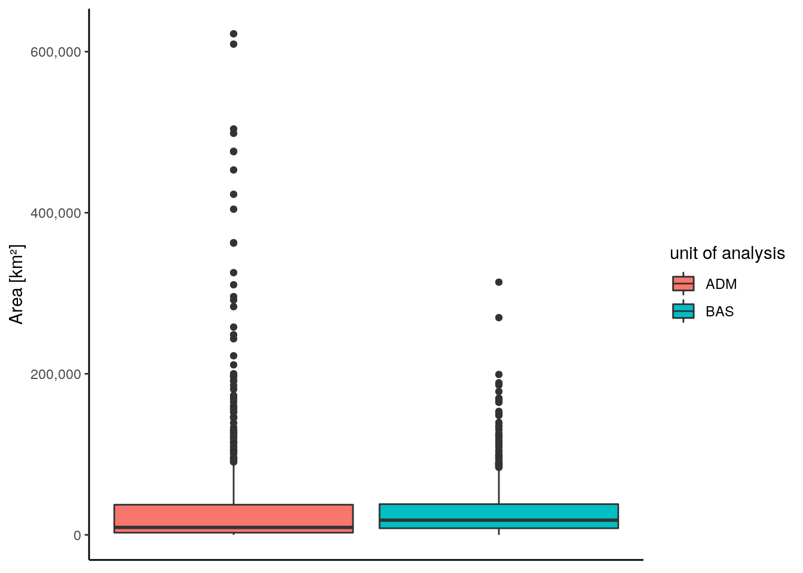
We use data from the Upsala conflict data program to retrieve the response variable for this project. The database is an event database, meaning that every reported violent conflict with at least one death is included as an single event associated with information on involved actors, time and location as well as estimated deaths by party involved. Since the data is mainly collected automatically sometimes inaccuracies concerning the exact location or the number of deaths are introduced. However, the data creators include information on the accuracy and thus the reliablity for each logged event. We downloaded the database for the African continent and filtered it to events occurring between 2000 and 2019 and additionally only included events for which the quality of the geographic localization was at least accurate on the sub-national level and the accuracy of the time was at least on a monthly scale. Additionally, the data is provided with three different classes of conflict which were extracted as well. These are state-based violence, non-state violence and one-sided violence.
load("../data/raw/ged/ged201.RData")
ged201$date_start = as.Date(ged201$date_start, "%Y/%m/%d")
ged201 = st_as_sf(ged201, coords = c("longitude", "latitude"), crs = "EPSG:4326")
ged201 = ged201[which(st_intersects(st_union(adm), ged201, sparse = FALSE)), ]
ged201 %>%
as_tibble() %>%
mutate(date_start = as.Date(date_start, "%Y/%m/%d")) %>%
filter(date_start > as.Date("1999-12-31"),
where_prec %in% c(1,2,3),
date_prec != 5) %>%
select(type_of_violence, date_start, starts_with("deaths_"), country, geometry) -> response_raw
response_raw# A tibble: 25,652 x 8
type_of_violence date_start deaths_a deaths_b deaths_civilians deaths_unknown
<dbl> <date> <dbl> <dbl> <dbl> <dbl>
1 1 2000-03-14 1 0 0 0
2 1 2000-05-05 0 14 0 0
3 1 2000-12-24 1 0 0 1
4 1 2001-01-21 0 4 0 0
5 1 2001-02-08 13 0 0 0
6 1 2001-02-19 0 18 0 0
7 1 2001-02-23 0 19 0 0
8 1 2001-02-23 0 8 0 0
9 1 2001-04-06 1 0 0 0
10 1 2001-10-21 0 8 0 0
# … with 25,642 more rows, and 2 more variables: country <chr>, geometry <POINT
# [°]>In total we obtained 86,377 distinct events coupled with the filtering explained above. The diagram below indicates the distribution of these events over the time period on a monthly scale.
response_raw %>%
mutate(month = zoo::as.yearmon(date_start),
type_of_violence = factor(type_of_violence, labels = c("state-based", "non-state", "one-sided"))) %>%
group_by(month, type_of_violence) %>%
summarise(count = n()) %>%
complete(month, type_of_violence, fill = list(count = 0)) -> data
ggplot(data) +
geom_bar(aes(y=count, x=month, fill = type_of_violence), stat = "identity") +
theme_classic() +
labs(y="Number of events", x="Time", fill="Type of violence") +
theme(legend.position="bottom")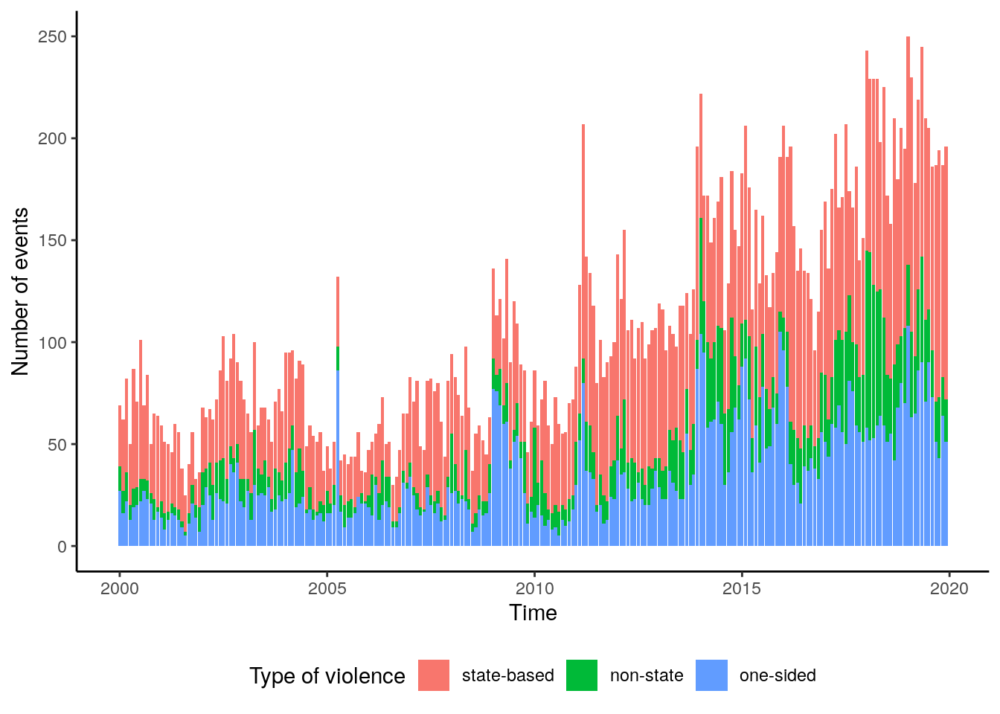 We can assume an increasing trend in the number of events over the time period. Also, the percentage of non-state violence increases over time, mainly to the cost of one-sided violence. We also can observe some kind of seasonal cycle in the number of conflicts. In order to verify these assumptions we can conduct a decomposition of the time-series. We firstly do so for the total number of events and then we conduct the same analysis by type.
response_raw %>%
mutate(month = zoo::as.yearmon(date_start),
type_of_violence = factor(type_of_violence, labels = c("state-based", "non-state", "one-sided"))) %>%
group_by(month) %>%
summarise(count = n()) -> ts_data
ts_data = ts(ts_data$count, start = c(2000,1), frequency = 12)
dec = decompose(ts_data)
data = data.frame(obsv = as.numeric(dec$x),
seasonal = as.numeric(dec$seasonal),
trend = as.numeric(dec$trend),
random = as.numeric(dec$random),
date = seq(as.Date("2000-01-01"), as.Date("2019-12-31"), by = "month"))
data %>%
as_tibble() %>%
gather(component, value, -date) %>%
mutate(component = factor(component, levels = c("obsv", "trend", "seasonal", "random"))) %>%
ggplot() +
geom_line(aes(x=date, y=value), color = "royalblue3") +
facet_wrap(~component, nrow = 4, scales = "free_y") +
theme_classic() +
labs(y = "Value", x = "Time")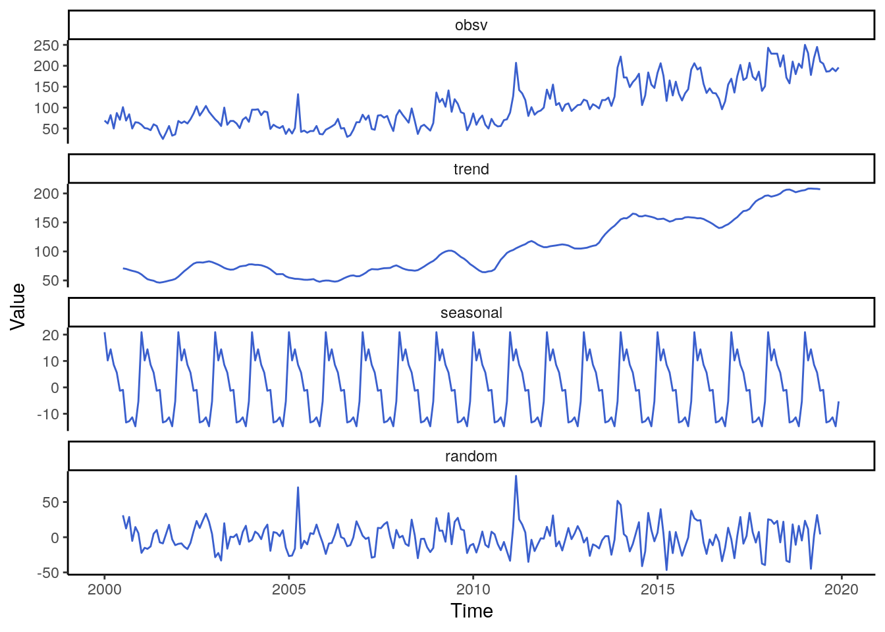 Concerning the decomposition of all types of violence combined we observe an unsteady trend pattern from 2000 to 2010, but a substantial increase afterwards. In 2014 the trend stabilizes at a high level. The seasonality of the data is quite strong, with a peak in January and a period with low occurrences between August and December.
response_raw %>%
mutate(month = zoo::as.yearmon(date_start),
type_of_violence = factor(type_of_violence, labels = c("state-based", "non-state", "one-sided"))) %>%
group_by(month, type_of_violence) %>%
summarise(count = n()) %>%
complete(month, type_of_violence, fill = list(count = 0))-> ts_data2
dec_types = lapply(c("state-based", "non-state", "one-sided"), function(x){
ts_data2 %>%
filter(type_of_violence == x) %>%
pull(count) %>%
ts(start = c(2000,1), frequency = 12) %>%
decompose()
})
names(dec_types) = c("state-based", "non-state", "one-sided")
plt_data = lapply(c("state-based", "non-state", "one-sided"), function(x){
tmp = dec_types[[x]]
tmp = data.frame(type = x,
obsv = as.numeric(tmp$x),
seasonal = as.numeric(tmp$seasonal),
trend = as.numeric(tmp$trend),
random = as.numeric(tmp$random),
date = seq(as.Date("2000-01-01"), as.Date("2019-12-31"), by = "month"))
tmp
})
plt_data = do.call(rbind, plt_data)
plt_data %>%
as_tibble() %>%
gather(component, value, -type, -date) %>%
mutate(component = factor(component, levels = c("obsv", "trend", "seasonal", "random")),
type = factor(type, levels = c("state-based", "non-state", "one-sided"))) %>%
ggplot() +
geom_line(aes(x=date, y=value, color=type)) +
facet_wrap(~component, nrow = 4, scales = "free_y") +
theme_classic() +
labs(y = "Value", x = "Time", color = "Type of violence") +
theme(legend.position="bottom")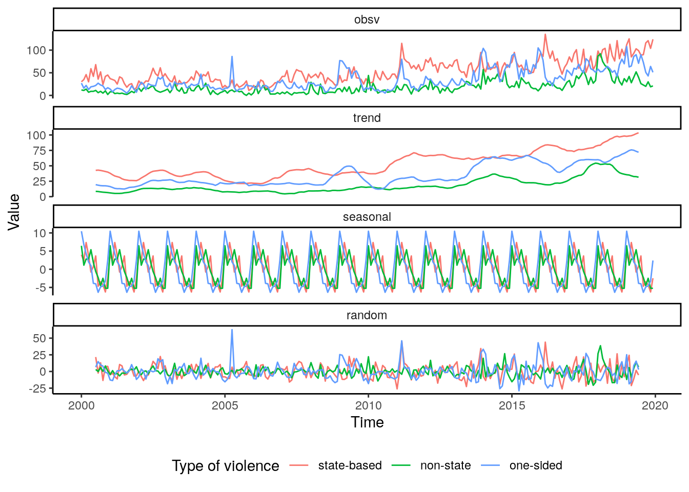
When we analyse the decomposition based on types of conflicts, we see that state-based violence is dominating the overall pattern. By far the most conflicts belong to that class and the seasonal and trend pattern of all classes combined mainly mirrors the dynamic found for state-based violence. The patterns for non-state and one-sided violence are quite distinct from the former class, however, the two are very much alike. The seasonal pattern shows that the lowest number of conflicts are found from September through December while the peak number of conflicts is found in January. Concerning the trend, one-sided violence overall is rather stable over the time period. After 2005 there is a steady increase in non-state violence which increases substantially in slope with the year 2017.
Aside from the count of events, we can analyze the number of casualties which were suffered when the events occurred. As pointed out before, the casualties are ordered by participating groups and additionally deaths of civilians and unknown deaths are included in the database. Here we will focus on the total number of deaths, irrespective of the group affiliation.
response_raw %>%
mutate(month = zoo::as.yearmon(date_start),
type_of_violence = factor(type_of_violence, labels = c("state-based", "non-state", "one-sided"))) %>%
group_by(month, type_of_violence) %>%
summarise(deaths = sum(deaths_civilians, deaths_a, deaths_b, deaths_unknown)) %>%
complete(month, type_of_violence, fill = list(deaths = 0))-> deaths_dat
deaths_dat %>%
group_by(month) %>%
#summarise(deaths = sum(deaths)) %>%
ggplot() +
geom_histogram(aes(x=deaths, group = type_of_violence, color = type_of_violence, fill = type_of_violence),
alpha=0.5, position="stack", binwidth = 50)+
theme_classic() +
labs(y="Count", x="Number of casualties", color = "Type of violence", fill = "Type of violence") +
theme(legend.position = "bottom")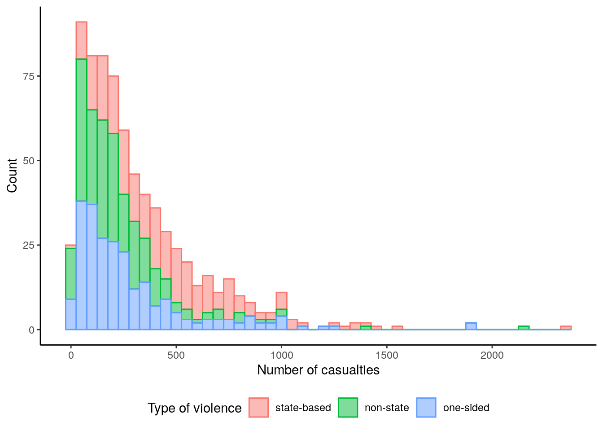
The histogram of the number of casualties reveals that one-sided and state-based violence generally are associated with numbers of casualties below 1000. State-based violence on the other hand clearly is the most frequent violence class with casualties higher 1000.
deaths_dat %>%
ggplot() +
geom_bar(aes(y=deaths, x=month, fill = type_of_violence), stat = "identity") +
theme_classic() +
labs(y="Number of casulties", x="Time", fill="Type of violence") +
theme(legend.position="bottom")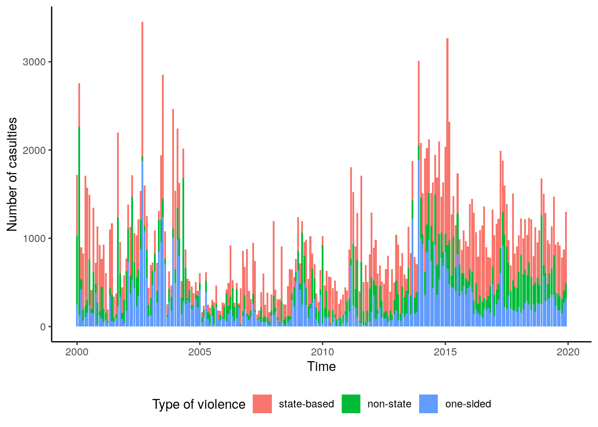 Concerning the dynamic of casualties over time, we can observe relatively high numbers of casualties at the beginning of the time series with a low episode around from 2005 to 2010. Starting with 2011, the casualties seem to increase and the number of casualties reaches its highest level of the complete time series between 2014 and 2015. There is a small decrease towards the year 2018.
deaths_dat %>%
group_by(month) %>%
summarise(deaths = sum(deaths)) %>%
pull(deaths) %>%
ts(start = c(2000,1), frequency = 12) %>%
decompose() -> dec
data = data.frame(obsv = as.numeric(dec$x),
seasonal = as.numeric(dec$seasonal),
trend = as.numeric(dec$trend),
random = as.numeric(dec$random),
date = seq(as.Date("2000-01-01"), as.Date("2019-12-31"), by = "month"))
data %>%
as_tibble() %>%
gather(component, value, -date) %>%
mutate(component = factor(component, levels = c("obsv", "trend", "seasonal", "random"))) %>%
ggplot() +
geom_line(aes(x=date, y=value), color = "royalblue3") +
facet_wrap(~component, nrow = 4, scales = "free_y") +
theme_classic() +
labs(y = "Value", x = "Time")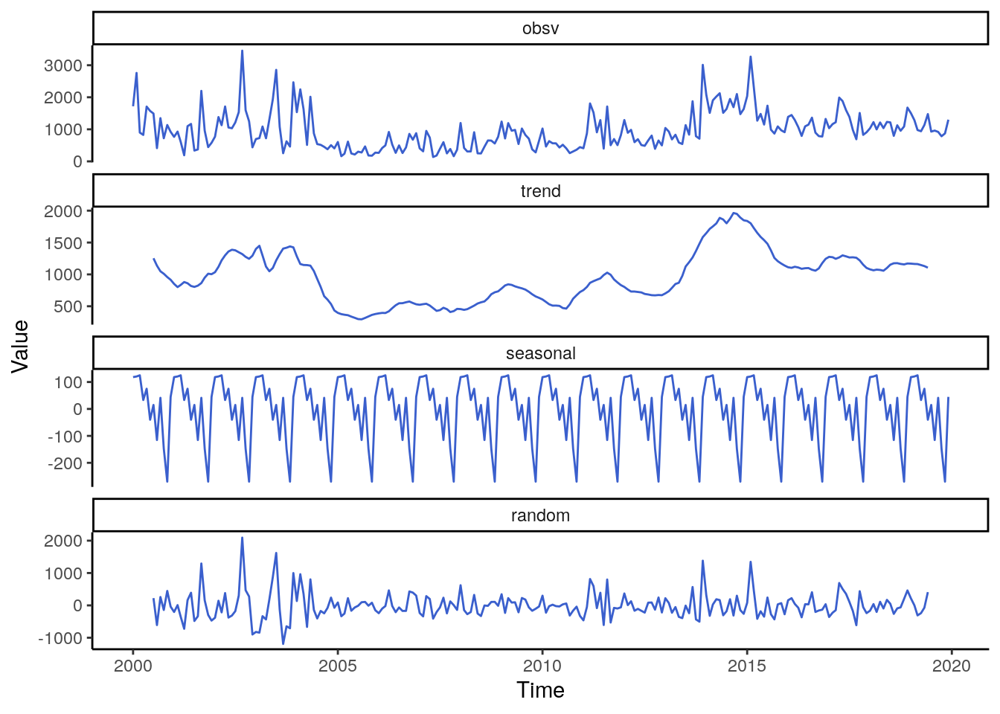
The general trend irrespective of the violent type shows a flat dynamic from 2005 to 2010. After that year the slope of the frend increases substantially resulting in the highest peak between 2014 and 2015 which remains on a relativly high level even towards 2018. The seasonality of casualties is quite similar to the total number of events, namely with a bimodal peak in March and May. The month with the lowest numbers of casualties is November.
deaths_dec = lapply(c("state-based", "non-state", "one-sided"), function(x){
deaths_dat %>%
filter(type_of_violence == x) %>%
pull(deaths) %>%
ts(start = c(2000,1), frequency = 12) %>%
decompose()
})
names(deaths_dec) = c("state-based", "non-state", "one-sided")
plt_data = lapply(c("state-based", "non-state", "one-sided"), function(x){
tmp = deaths_dec[[x]]
tmp = data.frame(type = x,
obsv = as.numeric(tmp$x),
seasonal = as.numeric(tmp$seasonal),
trend = as.numeric(tmp$trend),
random = as.numeric(tmp$random),
date = seq(as.Date("2000-01-01"), as.Date("2019-12-31"), by = "month"))
tmp
})
plt_data = do.call(rbind, plt_data)
plt_data %>%
as_tibble() %>%
gather(component, value, -type, -date) %>%
mutate(component = factor(component, levels = c("obsv", "trend", "seasonal", "random")),
type = factor(type, levels = c("state-based", "non-state", "one-sided"))) %>%
ggplot() +
geom_line(aes(x=date, y=value, color=type)) +
facet_wrap(~component, nrow = 4, scales = "free_y") +
theme_classic() +
labs(y = "Value", x = "Time", color = "Type of violence") +
theme(legend.position="bottom")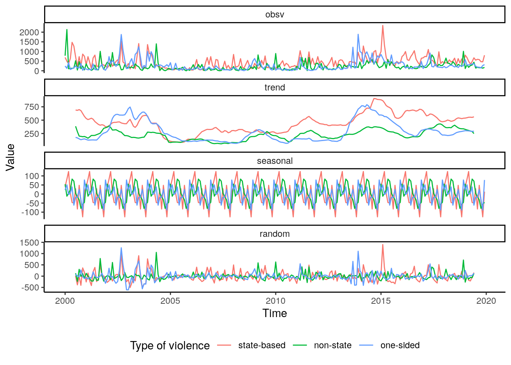 Unsurprisingly, the general time-series is dominated by the signal of state-based violence as well. However, the seasonality of casualties for the different types of violence are more alike than compared to the total number of events. The local peak during the years 2008 to 2009 is not observed in non-state and one-sided violence. The same is true for non-state violence where there is no substantial increase in casualties in 2014. The increase is observed with one-sided violence, however, the trend flips shortly after 2015 showing a greater stability than compared with state-based violence.
Until now the analysis of violent conflict took a perspective on the African
continent as a whole. Since the overall aim of this project is to establish a
machine learning model to predict violent conflict for smaller spatial units,
a spatio-temporal aggregation of the conflict data is needed.
To achieve this, in the first step we declare a spatio-temporal objects based
on the spatial information of the units of analysis. We will need the package
spacetime for this.
library(spacetime)
date_vec = seq(as.Date("2000-01-01"), as.Date("2019-12-31"), by = "month")
adm_st = STF(as_Spatial(adm), date_vec)
bas_st = STF(as_Spatial(bas), date_vec)
str(bas_st@time)An 'xts' object on 2000-01-01/2019-12-01 containing:
Data: int [1:240, 1] 1 2 3 4 5 6 7 8 9 10 ...
- attr(*, "dimnames")=List of 2
..$ : NULL
..$ : chr "timeIndex"
Indexed by objects of class: [Date] TZ: UTC
xts Attributes:
NULLAs evident from the above output these objects now contain a time slot where the information on the time dimension is stored. We specified a monthly resolution from January 2000 to December 2019. The next step is to aggregate the conflict data based on their location in space and time and add the data to the objects declared above. Note, that we are aggregating the total sum of deaths irrespective of the classification but we want to keep information on the type of violence. Therefor the raw data is in need for some restructuring.
response_raw %>%
mutate(deaths = deaths_civilians + deaths_a + deaths_b + deaths_unknown) %>%
select(type_of_violence, date_start, deaths, geometry) -> agg_data
classes = c("sb", "ns", "os", "all")
for(i in 1:4){ # loop through types of conflict + all types
print(i)
if(i != 4){ # filter if appropriate
points = as_Spatial(st_as_sf(agg_data[agg_data$type_of_violence == i, ]))
} else { # else take all conflicts
points = as_Spatial(st_as_sf(agg_data))
}
# declaration of a space-time data frame
points_st = STIDF(points, points$date_start, data = data.frame(casualties = points$deaths))
# aggregate the sum of deahts
res_adm = aggregate(points_st, adm_st, sum, na.rm = T)
saveRDS(res_adm, paste0("../data/vector/ged/st_adm_", classes[i],".rds"))
rm(res_adm)
gc()
print("Done with ADM.")
res_bas = aggregate(points_st, bas_st, sum, na.rm = T)
saveRDS(res_bas, paste0("../data/vector/ged/st_bas_", classes[i],".rds"))
rm(res_bas)
gc()
print("Done with BAS.")
}bas_data = list.files("../data/vector/ged/", pattern ="bas", full.names = T)
adm_data = list.files("../data/vector/ged/", pattern ="adm", full.names = T)
for(x in bas_data){
object = readRDS(x)
object@data[is.na(object@data)] = 0 # set NA to 0 for no conflict
object = as(object, "Spatial")
object = st_as_sf(object)
st_crs(object) = st_crs(4326)
type = str_remove(str_split(basename(x), "_")[[1]][3], ".rds")
names(object)[1:(ncol(object)-1)] = format(as.Date(names(object)[1:(ncol(object)-1)]), "%b-%Y")
st_write(object, paste0("../data/vector/response_", type, "_basins.gpkg"), delete_dsn = T)
}
for(x in adm_data){
object = readRDS(x)
object@data[is.na(object@data)] = 0 # set NA to 0 for no conflict
object = as(object, "Spatial")
object = st_as_sf(object)
st_crs(object) = st_crs(4326)
type = str_remove(str_split(basename(x), "_")[[1]][3], ".rds")
names(object)[1:(ncol(object)-1)] = format(as.Date(names(object)[1:(ncol(object)-1)]), "%b-%Y")
st_write(object, paste0("../data/vector/response_", type, "_states.gpkg"), delete_dsn = T)
}files = list.files("../data/vector/", pattern = "response", full.names = T)
results = list()
for(i in c("basins", "states")){
tmp_files = files[grep(i, files)]
levels = sapply(tmp_files, function(x) str_split(basename(x), "_")[[1]][2], USE.NAMES = F)
data = do.call(rbind, lapply(1:length(tmp_files), function(x){
tmp_files[x] %>%
st_read(quiet=T) %>%
st_drop_geometry %>%
mutate(id = 1:n()) %>%
gather("time", "value", -id) %>%
mutate(type = levels[x])
})
)
results[[i]] = data
}results$basins %>%
as_tibble() %>%
mutate(conflict = if_else(value>0, "yes", "no")) %>%
count(conflict) -> n_bas
results$states %>%
as_tibble() %>%
mutate(conflict = if_else(value>0, "yes", "no")) %>%
count(conflict) -> n_adm
dat = data.frame(unit = c("states", "basins"), perc = c(n_adm$n[n_adm$conflict=="yes"]/n_adm$n[n_adm$conflict=="no"]*100,
n_bas$n[n_bas$conflict=="yes"]/n_bas$n[n_bas$conflict=="no"]*100))
ggplot(dat) +
geom_bar(aes(x=unit, y=perc, fill=unit), color = "white", stat="identity", width = .5) +
theme_classic() +
labs(x="", y="Percentage of conflict district-months", fill="Unit of analysis")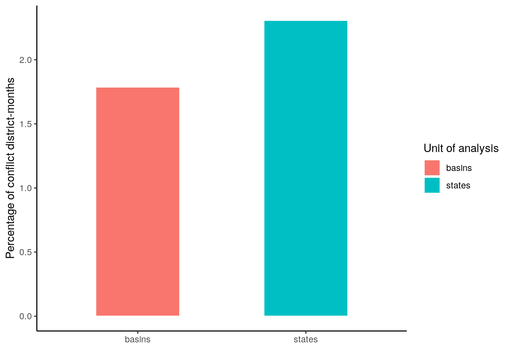
results$basins$unit = "basin"
results$states$unit = "states"
data = as_tibble(do.call(rbind, results))
data %>%
#filter(type == "all") %>%
mutate(conflict = if_else(value>0, "yes", "no")) %>%
group_by(id, unit, type) %>%
summarise(conflict = sum(conflict == "yes"), deaths = sum(value)) %>%
ggplot() +
geom_point(aes(x=conflict, y=deaths, color=unit), alpha=.4) +
facet_wrap(~type) +
theme_classic() +
labs(y="Number of casualties", x="Number of district-months with conflict",
color="Unit of analysis")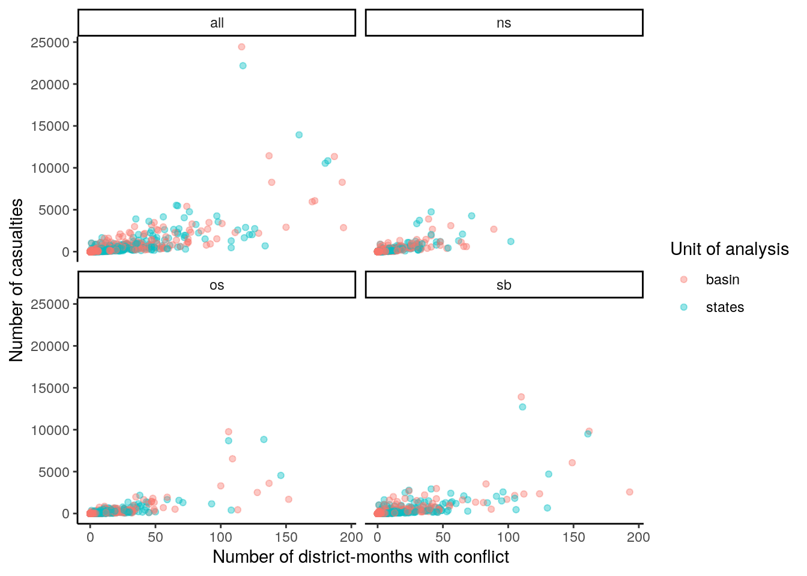
data %>%
#filter(type == "all") %>%
mutate(conflict = if_else(value>0, "yes", "no")) %>%
group_by(unit, type, time) %>%
summarise(conflict = sum(conflict == "yes"), deaths = sum(value)) %>%
ggplot() +
geom_line(aes(x=time, y=conflict, color=unit, group=unit), alpha=.6) +
facet_wrap(~type) +
theme_classic() +
labs(y="Number of districts with conflict", x="Time",
color="Unit of analysis") +
theme(axis.ticks.x=element_blank(),
axis.text.x=element_blank())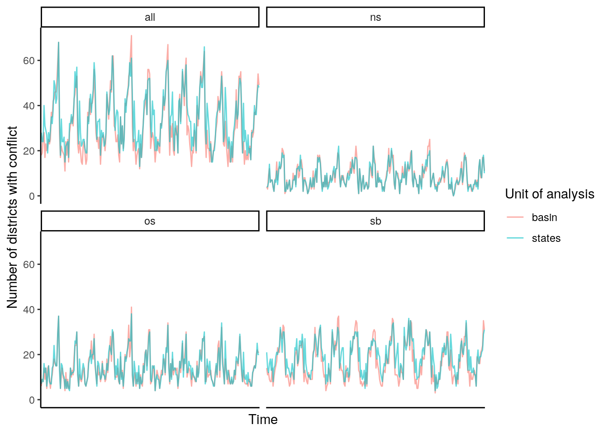
data %>%
#filter(type == "all") %>%
mutate(conflict = if_else(value>0, "yes", "no")) %>%
group_by(id, unit, type) %>%
summarise(conflict = sum(conflict == "yes"), deaths = sum(value)) %>%
ungroup() %>%
group_split(unit) -> g_data
names(g_data) = c("basin", "states")
adm$id = 1:nrow(adm)
bas$id = 1:nrow(bas)
adm = left_join(adm, g_data$states)
bas = left_join(bas, g_data$basin)tm_shape(adm) +
tm_polygons(col = "deaths", palette = "-RdYlBu", breaks = c(0,10,50,100,500,1000,2000,4000,6000,8000,10000,+Inf), border.col = "gray", lwd = .5) +
tm_facets("type")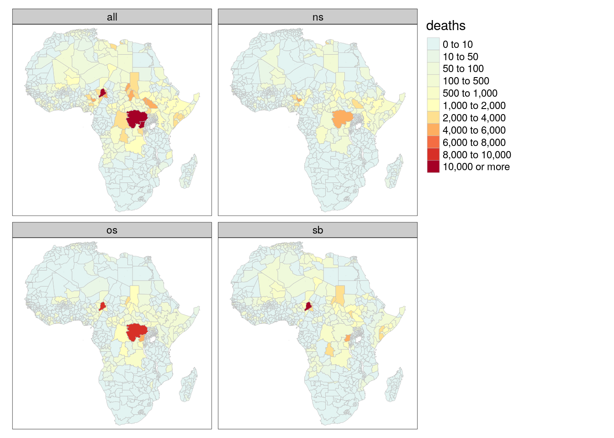
tm_shape(adm) +
tm_polygons(col = "conflict", palette = "-RdYlBu", breaks = c(0,5,10,25,50,75,100,150,+Inf), border.col = "gray", lwd = .5) +
tm_facets("type")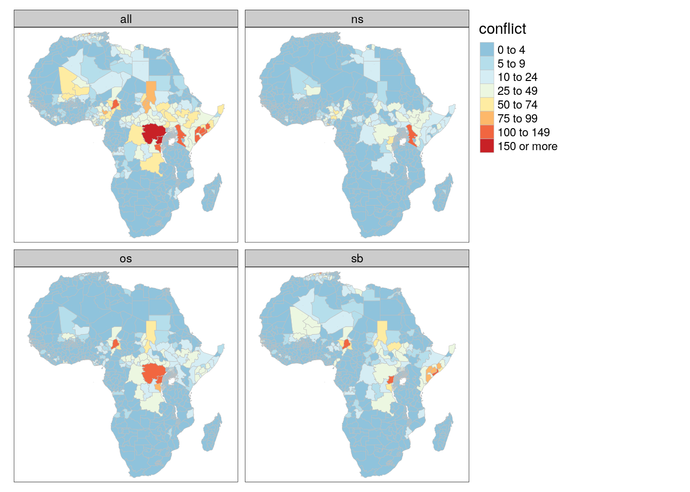
tm_shape(bas) +
tm_polygons(col = "deaths", palette = "-RdYlBu", breaks = c(0,10,50,100,500,1000,2000,4000,6000,8000,10000,+Inf), border.col = "gray", lwd = .5) +
tm_facets("type")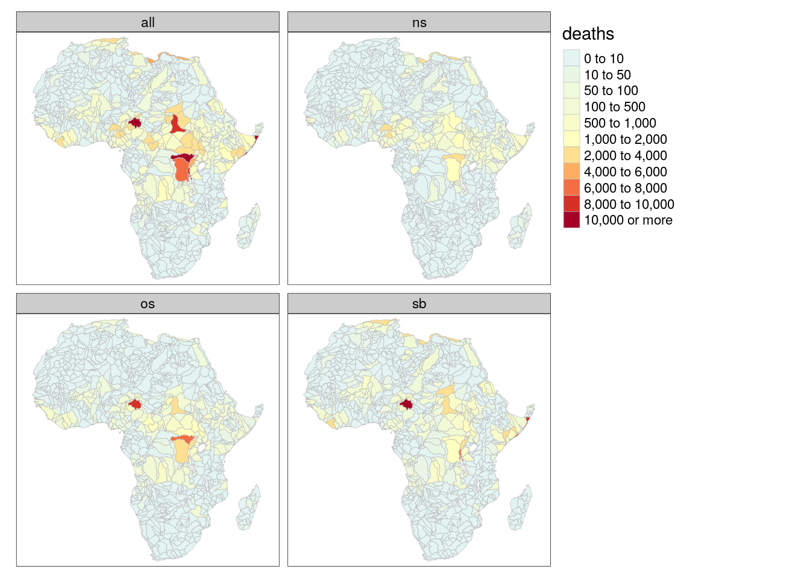
tm_shape(bas) +
tm_polygons(col = "conflict", palette = "-RdYlBu", breaks = c(0,5,10,25,50,75,100,150,+Inf), border.col = "gray", lwd = .5) +
tm_facets("type")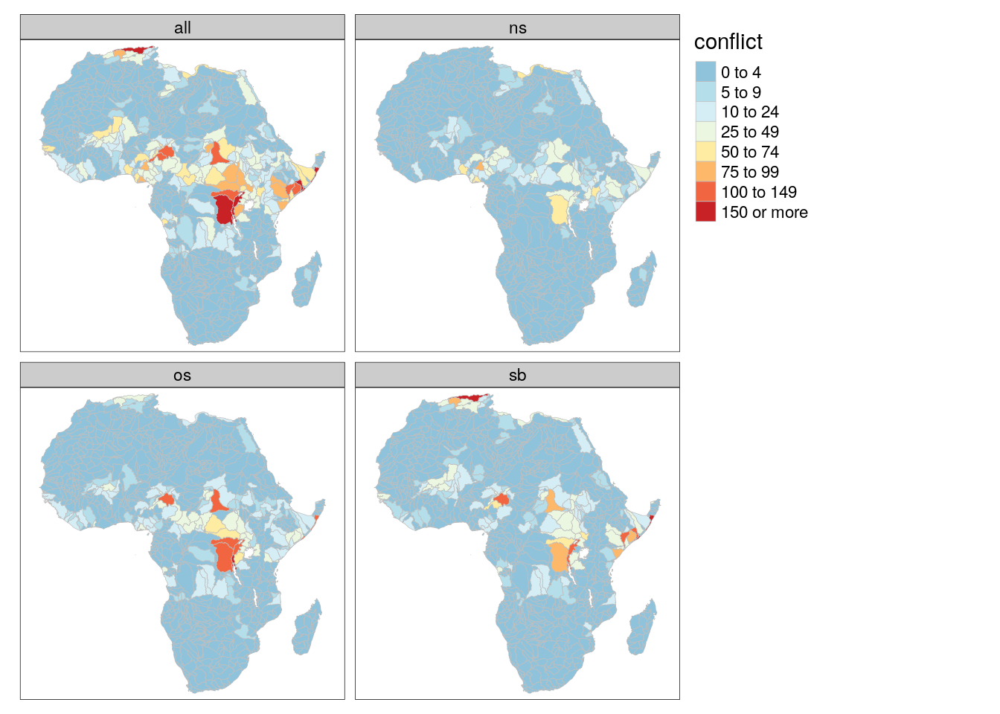
sessionInfo()R version 3.6.3 (2020-02-29)
Platform: x86_64-pc-linux-gnu (64-bit)
Running under: Debian GNU/Linux 10 (buster)
Matrix products: default
BLAS/LAPACK: /usr/lib/x86_64-linux-gnu/libopenblasp-r0.3.5.so
locale:
[1] LC_CTYPE=en_US.UTF-8 LC_NUMERIC=C
[3] LC_TIME=en_US.UTF-8 LC_COLLATE=en_US.UTF-8
[5] LC_MONETARY=en_US.UTF-8 LC_MESSAGES=C
[7] LC_PAPER=en_US.UTF-8 LC_NAME=C
[9] LC_ADDRESS=C LC_TELEPHONE=C
[11] LC_MEASUREMENT=en_US.UTF-8 LC_IDENTIFICATION=C
attached base packages:
[1] stats graphics grDevices utils datasets methods base
other attached packages:
[1] spacetime_1.2-3 lubridate_1.7.9.2 rgdal_1.5-18 countrycode_1.2.0
[5] welchADF_0.3.2 rstatix_0.6.0 ggpubr_0.4.0 scales_1.1.1
[9] RColorBrewer_1.1-2 latex2exp_0.4.0 cubelyr_1.0.0 gridExtra_2.3
[13] ggtext_0.1.1 magrittr_2.0.1 tmap_3.2 sf_0.9-7
[17] raster_3.4-5 sp_1.4-4 forcats_0.5.0 stringr_1.4.0
[21] purrr_0.3.4 readr_1.4.0 tidyr_1.1.2 tibble_3.0.6
[25] tidyverse_1.3.0 huwiwidown_0.0.1 kableExtra_1.3.1 knitr_1.31
[29] rmarkdown_2.7.3 bookdown_0.21 ggplot2_3.3.3 dplyr_1.0.2
[33] devtools_2.3.2 usethis_2.0.0
loaded via a namespace (and not attached):
[1] readxl_1.3.1 backports_1.2.0 workflowr_1.6.2
[4] lwgeom_0.2-5 splines_3.6.3 crosstalk_1.1.0.1
[7] leaflet_2.0.3 digest_0.6.27 htmltools_0.5.1.1
[10] fansi_0.4.2 memoise_1.1.0 openxlsx_4.2.3
[13] remotes_2.2.0 modelr_0.1.8 xts_0.12.1
[16] prettyunits_1.1.1 colorspace_2.0-0 rvest_0.3.6
[19] haven_2.3.1 xfun_0.21 leafem_0.1.3
[22] callr_3.5.1 crayon_1.4.0 jsonlite_1.7.2
[25] lme4_1.1-26 zoo_1.8-8 glue_1.4.2
[28] stars_0.4-3 gtable_0.3.0 webshot_0.5.2
[31] car_3.0-10 pkgbuild_1.2.0 abind_1.4-5
[34] DBI_1.1.0 Rcpp_1.0.5 viridisLite_0.3.0
[37] gridtext_0.1.4 units_0.6-7 foreign_0.8-71
[40] intervals_0.15.2 htmlwidgets_1.5.3 httr_1.4.2
[43] ellipsis_0.3.1 farver_2.0.3 pkgconfig_2.0.3
[46] XML_3.99-0.3 dbplyr_2.0.0 utf8_1.1.4
[49] labeling_0.4.2 tidyselect_1.1.0 rlang_0.4.10
[52] later_1.1.0.1 tmaptools_3.1 munsell_0.5.0
[55] cellranger_1.1.0 tools_3.6.3 cli_2.3.0
[58] generics_0.1.0 broom_0.7.2 evaluate_0.14
[61] yaml_2.2.1 processx_3.4.5 leafsync_0.1.0
[64] fs_1.5.0 zip_2.1.1 nlme_3.1-150
[67] whisker_0.4 xml2_1.3.2 compiler_3.6.3
[70] rstudioapi_0.13 curl_4.3 png_0.1-7
[73] e1071_1.7-4 testthat_3.0.1 ggsignif_0.6.0
[76] reprex_0.3.0 statmod_1.4.35 stringi_1.5.3
[79] highr_0.8 ps_1.5.0 desc_1.2.0
[82] lattice_0.20-41 Matrix_1.2-18 nloptr_1.2.2.2
[85] classInt_0.4-3 vctrs_0.3.6 pillar_1.4.7
[88] lifecycle_0.2.0 data.table_1.13.2 httpuv_1.5.5
[91] R6_2.5.0 promises_1.1.1 KernSmooth_2.23-18
[94] rio_0.5.16 sessioninfo_1.1.1 codetools_0.2-16
[97] dichromat_2.0-0 boot_1.3-25 MASS_7.3-53
[100] assertthat_0.2.1 pkgload_1.1.0 rprojroot_2.0.2
[103] withr_2.4.1 parallel_3.6.3 hms_1.0.0
[106] grid_3.6.3 minqa_1.2.4 class_7.3-17
[109] carData_3.0-4 git2r_0.27.1 base64enc_0.1-3